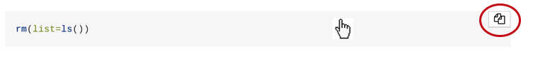

2 Week 11: Recap of the linear model and practising data-wrangling in R
Written by Margriet Groen (partly adapted from materials developed by the PsyTeachR team a the University of Glasgow)
Before we start covering new material, we want to spent some time on recapping the basic concepts of the linear model (correlation, simple regression, multiple regression). You all come from different educational backgrounds and therefore have vastly different knowledge of, and experience with statistics. Therefore, please follow your own judgement as to whether you feel you want to/need to revisit material outlining the theoretical background to and the practical implementation in R for these topics. Below we provide some guidance as to materials that are relevant. Just to be clear: We don’t expect you to watch and/or read and/or do everything, please have a look at what you feel you need and spend some time with those materials.
2.1 Lectures
The linear model was discussed in weeks 6 to 9 of PSYC401, so that is a good place to start.
Alternatively, if you don’t feel confident about the material, these recorded lectures might help.
The linear model: theory (~30 min) An introduction to the linear model and linear regression. I follow material as discussed in Chapter 4 of Bodo Winter’s book Statistics for Linguists: An Introduction using R (see below under ‘Reading’).
How to build a linear model in R (~30 min) In this video I demonstrate how to build a linear model in R by talking you through a simple linear regression script (you can download it here stats_linearModel_howTo.R). If you are unclear on what different parts of the lm() function do, or how to read the output, this video might help clarify that.
Multiple regression: theory (~35 min) An introduction to multiple regression. I follow material as discussed in Chapter 5 of Bodo Winter’s book Statistics for Linguists: An Introduction using R (see below under ‘Reading’).
Centering and standardising (~5 min) Brief explanation of what centering and standardising are.
2.2 Reading
2.2.1 Miller & Haden (2013)
Chapter 10 gives you a brief overview of what correlation and regression are. Chapter 11 introduces correlation in more detail. Chapters 12 and 14 provide accessible overviews of simple and multiple regression, respectively. All these chapters are really short but provide a good basis to understanding. We consider this the minimum level of understanding you should acquire.
2.2.2 Winter (2020)
Chapter 4 provides and excellent conceptual introduction to the linear model and also explains how this is implemented in R (highly recommended).
Chapter 5 takes a slightly different approach to the one taken in Miller & Haden (2013) to introducing correlation. If you already understand the basic theory behind correlation, this will be an interesting read. Chapter 5 also clearly explains what centering and standardizing are and why you need to bother with these linear transformations.
Chapter 6 provides an excellent overview of multiple regression and also explains how this is implemented in R.
2.3 Pre-lab activities
After having watched the lectures and read the textbook chapters you’ll be in a good position to try these activities. Completing them before you attend your lab session will help you to consolidate your learning and help move through the lab activities more smoothly.
2.3.1 Pre-lab activity 1: Visualising the regression line
Have a look at this visualisation of the regression line by Ryan Safner.
In this shiny app, you see a randomly-generated set of data points (within specific parameters, to keep the graph scaled properly). You can choose a slope and intercept for the regression line by using the sliders. The graph also displays the residuals as dashed red lines. Moving the slope or the intercept too much causes the generated line to create much larger residuals. The shiny app also calculates the sum of squared errors (SSE) and the standard error of the regression (SER), which calculates the average size of the error (the red numbers). These numbers reflect how well the regression line fits the data, but you don’t need to worry about those for now.
In the app he uses the equation Y = aX + b in which b is the intercept and a is the slope.
This is slightly different from the equation you saw during the lecture. There we talked about Y = b0 + b1*X + e. Same equation, just different letters. So b0 in the lecture is equivalent to b in the app and b1 in the lecture is equivalent to a in the app.
Pre-lab activity questions:
- Change the slider for the intercept. How does it change the regression line?
- Change the slider for the slope. How does it change the regression line?
- What happens to the residuals (the red dashed lines) when you change the slope and the intercept of the regression line?
2.3.2 Pre-lab activity 2: Data-wrangling in R
In PSYC401, you’ve already learned how to read in data, how to select variables and how to compute summary statistics, so re-visiting the PSYC401 materials is a good place to start.
RStudio also provides some useful interactive tutorials that take you through the basics:
The Basics Start here to learn how to inspect, visualize, subset and transform your data, as well as how to run code.
Work with Data Learn how to extract values form a table, subset tables, calculate summary statistics, and derive new variables.
Visualize Data Learn how to use ggplot2 to make any type of plot with your data. The tutorials on Exploratory Data Analysis and Scatterplots are particularly relevant.
Please note that there are often different ways to do the same or similar things in R. This means you might encounter slightly different functions or styles of coding in different materials. This is not something to worry about. Just make sure you’re clear on what a bit of code achieves and choose the function/style that you feel most comfortable with.
2.3.3 Pre-lab activity 3: Getting ready for the lab class
2.3.3.1 Remind yourself of how to access and work with the RStudio Server.
- Video on how to access the RStudio Server by Padraic
- I highly recommend using R Projects to structure your workflow. You could create an R project for each week of the module. Have a look at section 8 Workflow: projects of R for Data Science by Hadley Wickam and Gareth Grolemund for an introduction.
2.3.3.2 Get your files ready
Download the 402_week11_forStudents.zip file and upload it into a new folder in RStudio Server.
2.4 Lab activities
In this lab, you’ll gain understanding of and practice with:
- when and why to apply simple and multiple regression to answer questions in psychological science
- conducting multiple regression in R
- interpreting the R output of simple and multiple linear regression
- reporting results for simple and multiple linear regression following APA guidelines
2.4.1 Lab activity 1: Interpreting and reporting results
Have a look at the R output below.
R Output 1
- What is the outcome or dependent variable?
- What is the predictor or independent variable?
- Is the overall model significant?
- How much variance does the model account for?
Thinking about assumptions, what do you conlcude from the plots and output below?
Does the relationship appear linear?
Do the residuals show normality and homoscedasticity?
Scatterplot

QQ-plot
R Output 2

2.4.2 Lab activity 2: Conducting simple and multiple regression
2.4.2.1 Background
Today, to help get a practical understanding of regression, you will be working with real data and using regression to explore the question of whether there is a relationship between voice acoustics and ratings of perceived trustworthiness.
2.4.2.1.1 The Voice
The prominent theory of voice production is the source-filter theory (Fant, 1960) which suggests that vocalisation is a two-step process: air is pushed through the larynx (vocal chords) creating a vibration, i.e. the source, and this is then shaped and moulded into words and utterances as it passes through the neck, mouth and nose, and depending on the shape of those structures at any given time you produce different sounds, i.e. the filter. One common measure of the source is pitch (otherwise called Fundamental Frequency or F0 (F-zero)) (Titze, 1994), which is a measure of the vibration of the vocal chords, in Hertz (Hz); males have on average a lower pitch than females for example. Likewise, one measure of the filter is called formant dispersion (measured again in Hz), and is effectively a measure of the length of someone’s vocal tract (or neck). Height and neck length are suggested to be negatively correlated with formant dispersion, so tall people tend to have smaller formant dispersion. So all in, the sound of your voice is thought to give some indication of what you look like.
More recently, work has focussed on what the sound of your voice suggests about your personality. McAleer, Todorov and Belin (2014) suggested that vocal acoustics give a perception of your trustworthiness and dominance to others, regardless of whether or not it is accurate. One extension of this is that trust may be driven by malleable aspects of your voice (e.g. your pitch) but not so much by static aspects of your voice (e.g. your formant dispersion). Pitch is considered malleable because you can control the air being pushed through your vocal chords (though you have no conscious control of your vocal chords), whereas dispersion may be controlled by the structure of your throat which is much more rigid due to muscle, bone, and other things that keep your head attached. This idea of certain traits being driven by malleable features and others by static features was previously suggested by Oosterhof and Todorov (2008) and has been tested with some validation by Rezlescu, Penton, Walsh, Tsujimura, Scott and Banissy (2015).
So, the research question today is: Can vocal acoustics, namely pitch and formant dispersion, predict perceived trustworthiness from a person’s voice? We will only look at male voices today, but you have the data for female voices as well should you wish to practice (note that in the field, tendency is to analyse male and female voices separately as they are effectively sexually dimorphic). As such, we hypothesise that a linear combination of pitch and dispersion will predict perceived vocal trustworthiness in male voices. This is what we will analyse.
To complete this lab activity, you can use the R-script (402_wk11_labAct2.R) that you downloaded as part of the ‘pre-lab activities’ as a template. Work through the activity below, adding relevant bits of code to your script as you go along.
2.4.2.2 Step 1: Background and set up
Before you do anything else, when starting a new analysis, it is a good idea to empty the R environment. This prevents objects and variables from previous analyses interfering with the current one.
TASK: Use the code snippet below to clear the environment. TIP: If you hover your mouse over the box that includes the code snippet, a ‘copy to clipboard’ icon will appear in the top right corner of the box. Click that to copy the code. Now you can easily paste it into your script. 
rm(list=ls()) Before we can get started we need to tell R which libraries to use. For this analysis we’ll need broom, car, pwr and tidyverse.
TASK: Load the relevant libraries. HINT: Use the
library()function.
In this lab, we are setting out to test whether a linear combination of pitch and dispersion will predict perceived vocal trustworthiness in male voices. We’ll be working with two data files:
- voice_acoustics.csv - shows the VoiceID, the sex of the voice, and the pitch and dispersion values
- voice_ratings.csv - shows the VoiceID and the ratings of each voice by 28 participants on a scale of 1 to 9 where 9 was extremely trustworthy and 1 was extremely untrustworthy.
TASK: Read in both files (using the
read_csv()function), have a look at the layout of the data and familiarise yourself with it. The ratings data is rather messy and in a different layout to the acoustics but can you tell what is what?
QUESTION 1 How are the acoustics data and the ratings data organised (wide or long)? Are both data files ‘tidy’? If you need more info on what that means, have a look here.
2.4.2.3 Step 2: Restructuring the ratings data
We are going to need to do some data-wrangling before we do any analysis! Specifically, we need the change the ratings data to the long format.
Here we’ll use the pivot_longer() function (see here or type ?pivot_longer in the Console for more info) to restructure the ratings data from wide to long and store the resulting table as ‘ratings_tidy’.
TASK: Use the code snippet below to restructure the data.
ratings_tidy <- pivot_longer(
data = ratings, # the data you want to restructure
cols = P1:P28, # columns you want to restructure
names_to = "participant", # variable name that captures whatever is across the columns
# (in this case P1 to P28 for the 28 different participants)
values_to = "rating") # variable name that captures whatever is in the cells
# (in this case numbers for ratings)2.4.2.4 Step 3: Calculate mean trustworthiness rating for each voice
Now that we have the ratings data into a tidy format, the next step is to calculate the mean rating for each voice. Remember that each voice is identified by the ‘VoiceID’ variable.
TASK: Calculate the mean rating for each voice and store the resulting table in a variable named ‘ratings_mean’. HINT: Use
group_by()andsummarise(). Are you using the tidy data? Also, remember that if there are any missing values (NAs) then na.rm = TRUE would help.
2.4.2.5 Step 4: Join the data together
Ok, before we get ahead of ourselves, in order to perform the regression analysis we need to combine the data from ‘ratings_mean’ (the mean ratings) with ‘acoustics’ (the pitch and dispersion ratings). Also, as we said, we only want to analyse male voices today.
TASK: Join the two tables and keep only the data for the male voices, call the resulting table ‘joined’. HINT: Use the
inner_join()function (making use of the variable that is common across both tables) to join. See here or type?inner_joinin the Console for more info. Use thefilter()function to only keep male voices. Remember that the Boolean operator for exactly equal is==.
2.4.2.6 Step 5: Spreading the data
Ok so we are starting to get an understanding of our data and we want to start thinking about the regression. However, the regression would be easier to work with if Pitch and Dispersion were in separate columns. This can be achieved using the pivot_wider() function (see here or type ?pivot_wider in the Console for more info). This is basically the inverse of pivot_longer(). It increases the number of columns and decreases the number of rows.
TASK: Use the code snippet below to spread the data.
joined_wide <- joined %>%
pivot_wider(
names_from = measures, # name of the categorical column to spread
values_from = value) # name of the data to spreadQUESTION 2
Why do we not need to specify within the pivot_wider() function which data to use?
2.4.2.7 Step 6: Visualising the data
As always, it is a good idea to visualise your data.
TASK: Now that we have all the variables in one place, make two scatterplots, one of mean trustworthiness rating with dispersion and one for mean trustworthiness rating and pitch. HINT: For this you’ll need the
ggplot()function together withgeom_point()andgeom_smooth(). Make sure to give your axes some sensible labels.
QUESTION 3 According to the scatterplots, how would you decribe the relationships between trustworthiness and dispersion and trustworthiness and pitch in terms of direction and strength? Which one of the two seems stronger?
2.4.2.8 Step 7: Conducting and interpreting simple regression
With all the variables in place, we’re ready now to start building two simple linear regression models:
Predicting trustworthiness mean ratings from Pitch
Predicting trustworthiness mean ratings from Dispersion
TASK: Use the
lm()function to run the following two regression models and use thesummary()function to look at the output of each model. Store the first model in a table called ‘mod_pitch’ and store the second model in ‘mod_disp’. HINT:lm(dv ~ iv, data = my_data)
QUESTION 4 What do you conclude from the output of these models? Which model is significant? Which predictors are significant? How much variance does each model describe?
2.4.2.9 Step 8: Conducting and interpreting multiple regression
Now let’s look at both predictors in the same model. Before we do this, it is sensible to center and standardise the predictors.
Look at the code below. Can you follow how the predictors are first centered (_c) and then standardised (_z)?
Here I do this by hand because I think it makes it clearer, even though there are functions that do this in one step (scale()).
joined_wide <- mutate(joined_wide,
Dispersion_c = Dispersion - mean(Dispersion),
Dispersion_z = Dispersion_c / sd(Dispersion_c),
Pitch_c = Pitch - mean(Pitch),
Pitch_z = Pitch_c / sd(Pitch_c))TASK: Now use the centered and standardised data for the multiple regression. Use the
lm()function to run a model for predicting trustworthiness mean ratings from Pitch and Dispersion, and store the model in ‘mod_pitchdisp_z’. Use the ‘summary()’ function to look at the output. HINT:lm(dv ~ iv1 + iv2, data = my_data)
QUESTION 5 What do you conclude from the output of this model? Is the overall model significant? Which predictors are significant? How much variance does the model describe? Which model would you say is best for predicting ratings of trustworthiness, the Pitch only, the Dispersion only or the Pitch+Dispersion model?
2.4.2.10 Step 9: Checking assumptions
Now that we’ve established which model best fits the data, let’s check whether it meets the assumptions of linearity, normality and homoscedasticity.
TASK: Check the assumptions of linearity, normality and homoscedasticity. HINT:
crPlots()to check linearityqqPlot()andshapiro.test()to check normality of the residualsresidualPlot()andnvcTest()to check homoscedasticity of the residuals
QUESTION 6 What do you conclude from the graphs and output? Should we also check for collinearity?
2.4.2.11 Step 10: Writing up the results
TASK: Write up the results following APA guidelines. HINT: The Purdue writing lab website is helpful for guidance on punctuating statistics. The APA Style 7th Edition Numbers and Statistics Guide is also useful.
2.5 Answers
When you have completed all of the lab content, you may want to check your answers with our completed version of the script for this week. Remember, looking at this script (studying/revising it) does not replace the process of working through the lab activities, trying them out for yourself, getting stuck, asking questions, finding solutions, adding your own comments, etc. Actively engaging with the material is the way to learn these analysis skills, not by looking at someone else’s completed code…
2.5.1 Lab activity 1: Interpreting and reporting results
- What is the outcome or dependent variable? Word reading
- What is the predictor or independent variable? Non-word reading
- Is the overall model significant? Yes, F(1,50) = 69.03, p < .001
- How much variance does the model account for? 58%
- Does the relationship appear linear? Yes. The dots and the pink line assemble quite closely on the dashed line.
- Do the residuals show normality and homoscedasticity? The qq-plot suggest that the residuals are normally distributed as the dots fall close to the solid blue line and within the range of the dashed blue lines. The Shapiro-Wilk test of normality confirms this (it is not significant). Similarly, the output of the non-constant variance score tests is not significant suggesting that the residuals are homoscedastic.
2.5.2 Lab activity 2: Conducting simple and multiple regression
You can download the R-script that includes the relevant code and answers to the questions here: 402_wk11_labAct2_withAnswers.R.